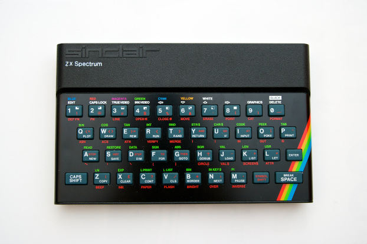

The First Computer
The first computers made were big. Room size big.
They were also very expensive and pretty slow and you had to be a specialist to program them.
So the president of IBM, Thomas Watson, can be forgiven for his infamous quote from 1943:
"I think there is a world market for maybe five computers.
The first popular micro computer
A micro computer is defined as a computer with a single central processing unit (CPU) as a microprocessor.
Featured on the cover of the magazine Popular Electronics in January 1975 was the MITS Altair 8800 and this started the new era of the micro computer.
Limited as it were, it was still widely popular though mainly amongst geeks. The MITS could be purchased as a DIY project,
and when is was assembled it had eight switches that could be used to program it.
Each switch represented one bit in the memory register and instructions were made one byte at a time.
Fun fact!
The word “geek” originally (in the 16th century) meant a freak (from Dutch “gek” or Low German “geck”),
but from 1983 it has been recorded in teenage slang as
referring to peers with few social skills but a keen interest in new technology.
The firsts developer-friendly micro computers
As the micro computers developed and became more advanced, they would have more memory and a build in keyboard.
They would also come with some sort of text based interface – typically a specific flavour of a programming language like Basic or something similar.
One of the most well known micro computers was the ZX81, which came out in 1981. This computer had a wide appeal even though it had no more than 1 Kb of RAM.
Later extension modules became available, so that you could upgrade to either 16 or 64 Kb.
With so much RAM you could type in 64.000 characters of computer code.
Color support!
The ZX81 was followed by the ZX Spectrum in 1982. This one came with 16 Kb but could be upgraded to 128 Kb. In order to use it,
one would have to connect it to a television set and the resolution you’d see would be 256 x 192 pixels which equals to 32 characters across in 24 lines.
The computer was able to show 8 colours and play five octaves of sound in mono.

The software operating system
A contester to the micro computer was IBM’s so-called Personal Computer or PC although is was much pricier and did not find it’s way into normal homes straight away. was a much began to change as the new IBM PC entered the market. The IBM PC used a software operating system. This had to load on startup, but made it easier to update - simply because you did not need to buy a completely new piece of hardware. The OS was called MSDOS.
The code was based on the UNIX operating system although greatly simplified.
From calculators to communication devices
Computers continued to develop. In the micro computer age the computer were mostly used as a very specialized machine. In many cases it was a toy used for gaming or a little bit of home programming. Later that changed, as the internet developed and people began to connect. In the words of Bill Gates, the founder of Microsoft and the developer of MSDOS: “I think it's fair to say that personal computers have become the most empowering tool we've ever created. They're tools of communication, they're tools of creativity, and they can be shaped by their user.”